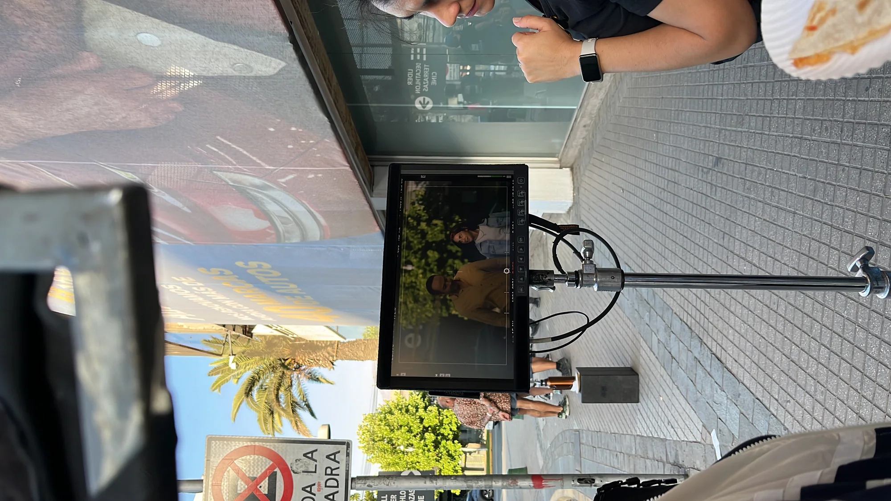
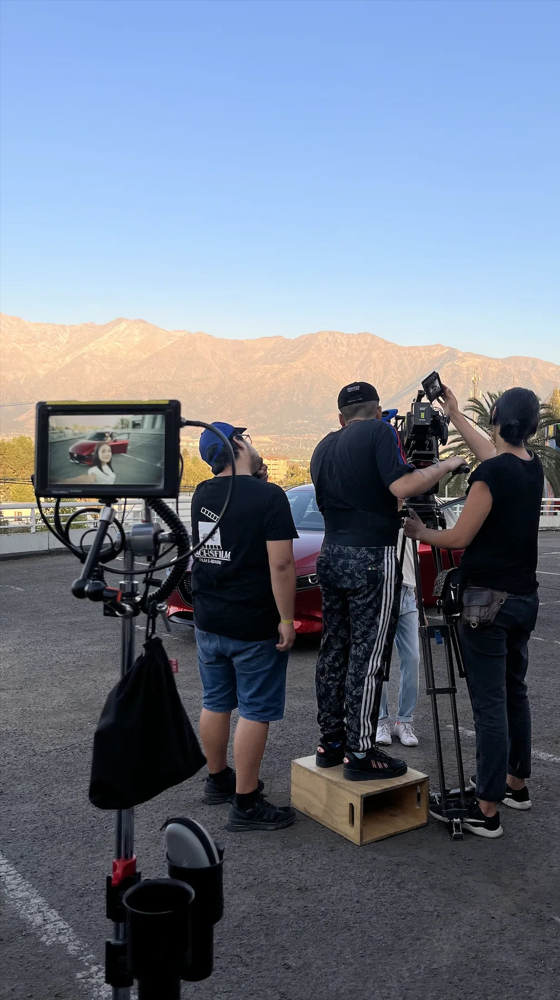
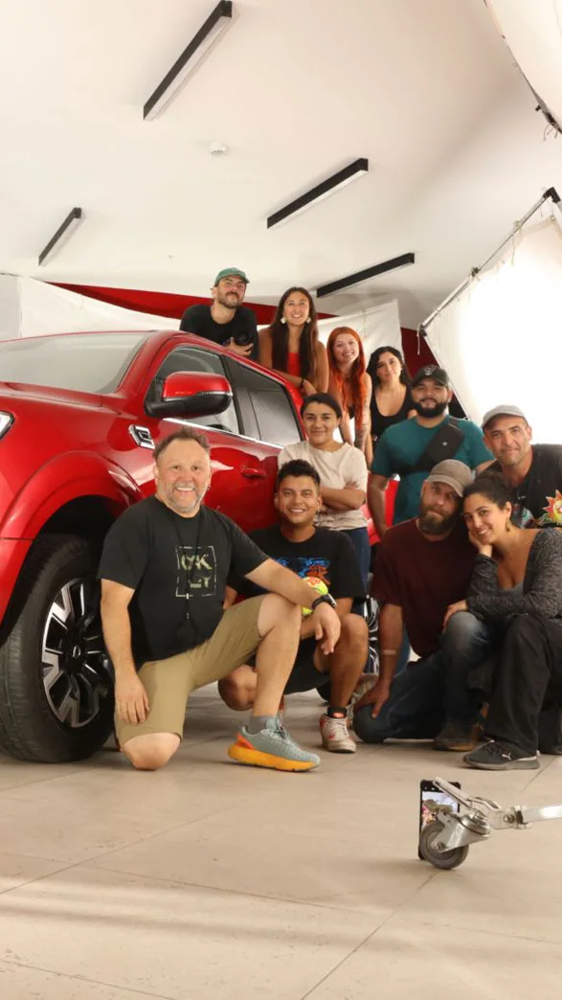
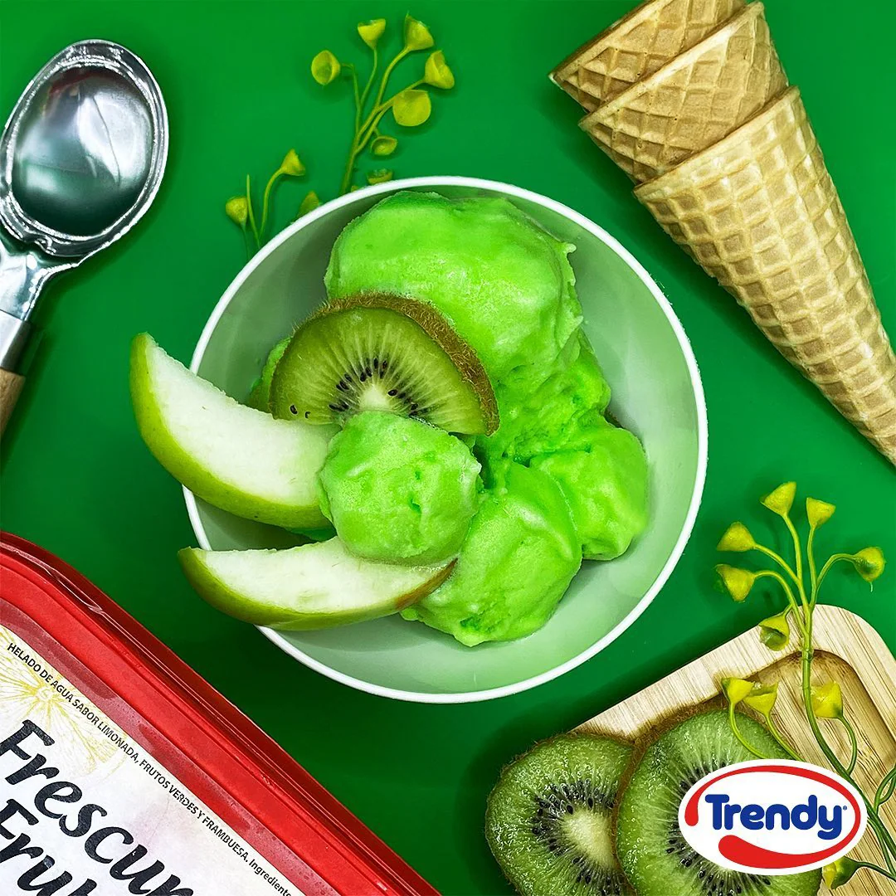
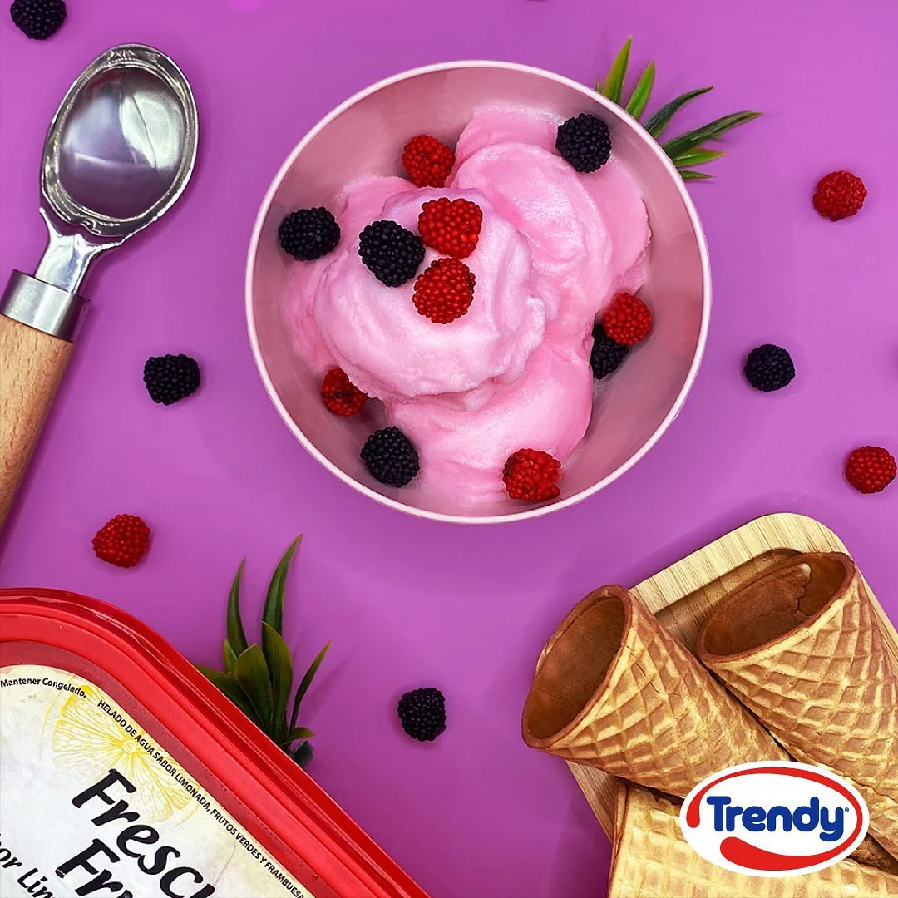
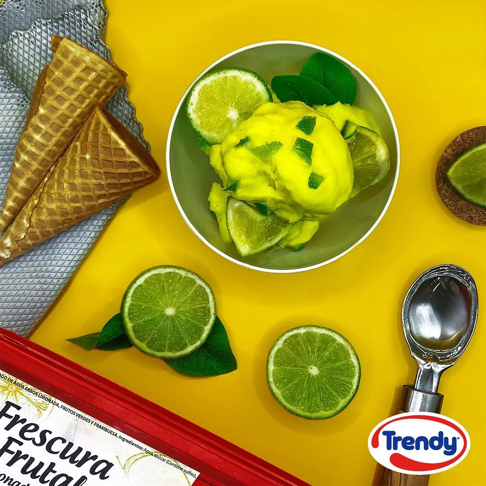
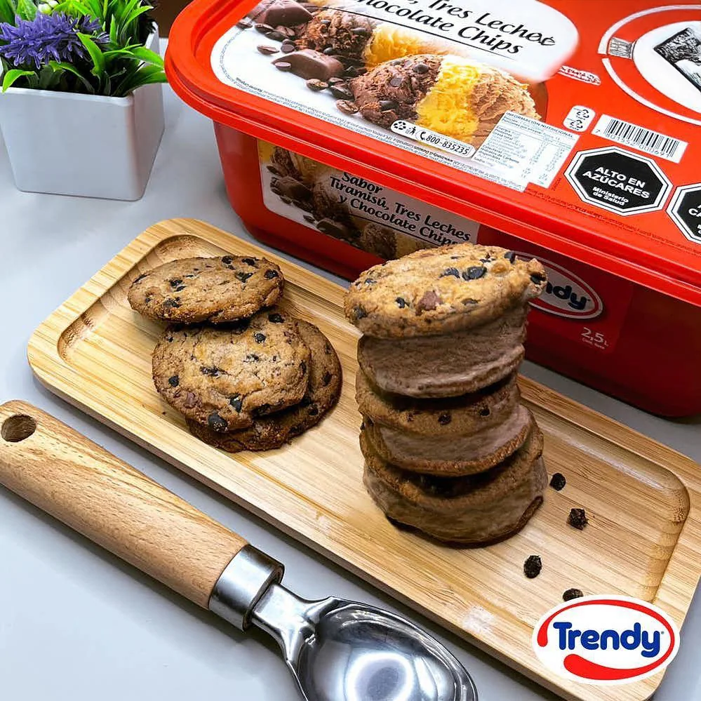
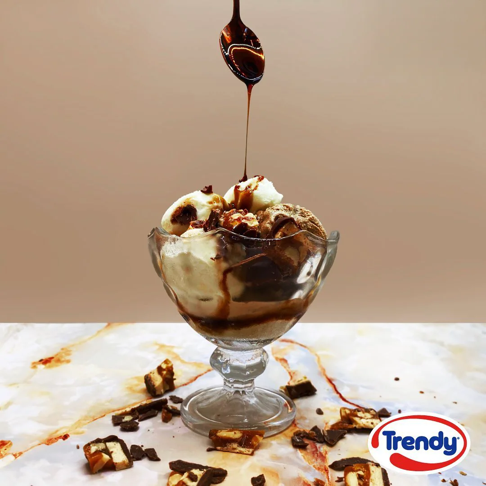
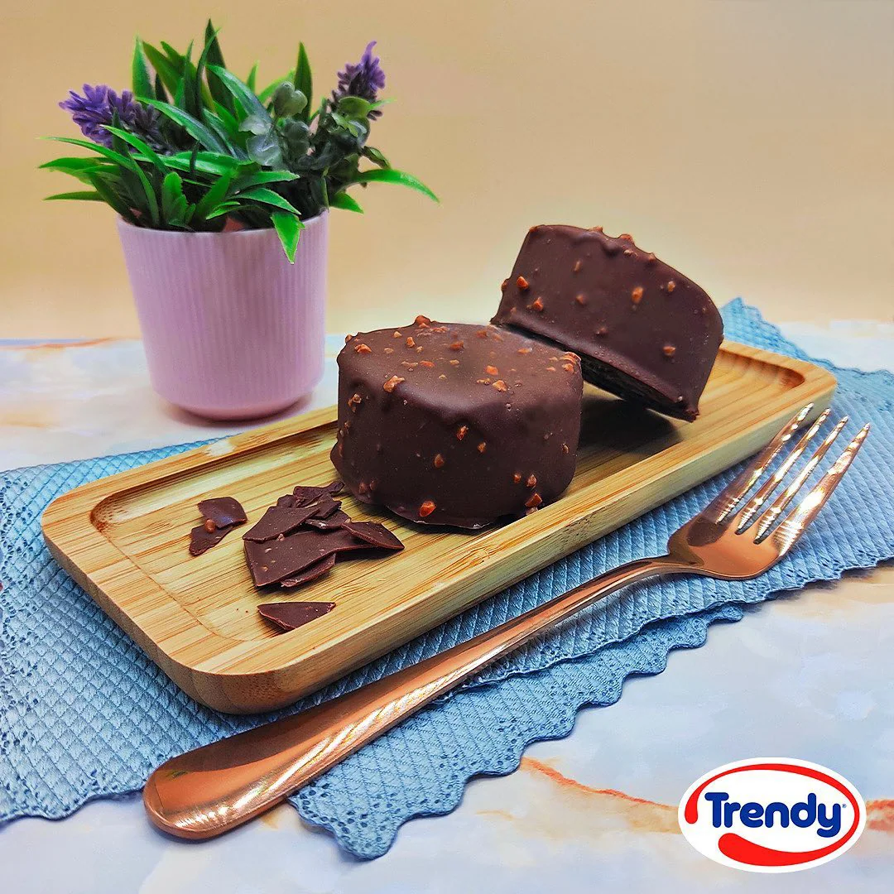

Art Direction
/ Content Production
I have had the opportunity to lead art direction for both social media content productions and TV spots.
This has included developing concepts, ideas, and scripts when necessary; designing and styling visually engaging sets; directing photography; and handling all the photo retouching needed for each project.



For TV productions specifically, I have been responsible for managing pre production with the external production company, supervising casting, wardrobe, performances, and on-set shoots, as well as creating the animated closing bumper. This allowed me to oversee the entire creative process end-to-end and ensure a cohesive visual outcome.






For social media, I have worked across both pre and post production for in-house photo and video shoots, as well as out-of-home productions designed for TikToks and Reels, and externally produced content, such as podcasts and the wide range of media assets generated from each episode.